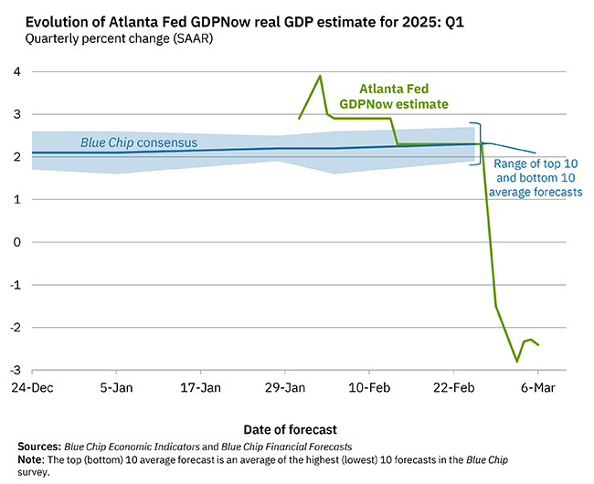

世界苦茶03月07日新闻 | 35条 | 中国设定20年来最低通胀目标

中国设定20年来最低通胀目标 | 加拿大在关税战上非常坚决 | 美国施压亚洲国家增加军费 | 美国暂停与乌克兰分香港终审法院推翻香港抗议者定罪 | 美国再放宽加墨部分关税到4月 | 尹锡悦取消羁押 | 马克龙考虑对欧洲提供核保护 | 美国经济陷入大幅衰退风险
三个水枪手
苦茶数据
美元兑人民币：7.24（昨日7.24，前日7.26）
美元兑日元：147.51（昨日149.26，前日150.10）
上证指数：3375（昨日3377，前日3324）
标普500指数：5738（昨日5842，前日5778）
比特币：88100（昨日91903，前日83708）
布伦特原油：69.53（昨日69.70，前日70.99）
中国新闻
• 吴彦祖开设英语课程吸引网民 ：香港明星吴彦祖在抖音、小红书等平台开设“吴彦祖教英语”账号，并推出口语课程，其英语网课目前售价398元人民币，吸引不少网民。综合羊城晚报、星岛日报和九派新闻报道，吴彦祖近日在相关平台发布两条视频推荐其英语课程，获得超9万点赞。账号在简介中称，吴彦祖毕业于俄勒冈大学，是雅识教育主理人之一，也是中英双语演说家，“最会说英语的明星”之一。吴彦祖在星期三发布的视频中，对最近爆红的中国电影《哪吒之魔童闹海》台词“急急如律令”进行翻译：“be quick to obey my command”，也翻译了台词“我命由我不由天”的翻译是“I am the master of my destiny”。 （翻评：惨。）
• 柬埔寨官方驳斥中国博主指控 ：中国一名博主指柬埔寨警察局和电诈园区同流合污，柬埔寨官方驳斥有关说法，并要求中国相关部门采取相应措施。这名有超过900万名粉丝的微博大V“贴小君”星期一发文，举报柬埔寨警察局和电诈园区同流合污，并说：“我已经把被困者的信息和园区信息都弄清楚了，但柬埔寨警察局玩阴的，表面上警察局说他们会去解救，结果转头就把信息卖给园区。”“贴小君”也申诉：“柬埔寨警察局明知道我提交的园区信息里有上百人被困于此，但他们并不会一窝端，因为园区都给警察局交保护费。”
• 习近平强调思政教育与人才培养 ：中共中央总书记习近平星期四强调，要坚持思政课建设和党的创新理论武装同步推进、思政课程和课程思政同向同行，把思政教育“小课堂”和社会“大课堂”有效融合起来，把德育工作做得更到位、更有效。根据新华社报道，习近平当天下午看望参加中国政协会议的民盟、民进、教育界委员，并参加联组会时说，新时代新征程，必须深刻把握中国式现代化对教育、科技、人才的需求，强化教育对科技和人才的支撑作用，进一步形成人才辈出、人尽其才、才尽其用的生动局面。习近平指出，建设教育强国、科技强国、人才强国，必须坚持正确办学方向，培养德智体美劳全面发展的社会主义建设者和接班人。要聚焦用新时代中国特色社会主义思想铸魂育人，把德育贯穿于智育、体育、美育、劳动教育全过程。
• 贵州省加强对东南亚的对外开放 ：中国贵州省省长李炳军说，贵州省坚持以东南亚为对外开放主方向。据中新社报道，十四届全国人大三次会议贵州代表团星期四举行开放团组会议。李炳军在答记者问时说，贵州轮胎这几年发展得比较好，获评全球灯塔工厂，去年越南三期项目已开工建设，这是贵州扩大对外开放、与亚细安国家深化合作的一个缩影。
• 黎智英国安法案庭审结束 ：香港壹传媒创办人黎智英星期四结束在被控“串谋勾结外国势力”等罪名的被称为里程碑式国安法案件中的出庭作供。这是黎智英国安法案第144天审理，也是他第52天亲自出庭作证。同一天，香港民主派活动人士谭得志因被控发表煽动性文字而遭判刑罚款一案提出的上诉，遭到香港终审法院的驳回。黎智英星期四在庭上结束作证时向法官表示感谢，同时向到场旁听的支持者挥手致意。
• 香港终审法院推翻支联会成员定罪 ：香港终审法院星期四一致推翻了对邹幸彤等三名前香港支联会成员的定罪判决，理由是存在不公平审判的情形。三人因为拒绝向警方提交该组织信息，原被控违反《香港国安法》实施细则而被定罪及入狱。这是涉及《香港国安法》的案件首次在终审法院胜诉并撤销定罪，对香港民主派人士来说是一次罕见的胜利。以首席法官张举能领衔的五名香港终审法院法官在判决中表示，控方从证据中移走了本可借以确立支联会为外国代理人的唯一材料，对控方举证不但适得其反，且“剥夺了上诉人获得公正审判的权利，导致他们的定罪涉及不公平审判”。 （翻评：肯定不是圣上开恩，而是国外压力比较大。）
亚太印太新闻
• 韩国总统尹锡悦3月7日获释，首尔中央地方法院接受了他取消逮捕的请求。
• 韩国波兰签署合作协议，强化安全合作 ：韩国与波兰星期三签署了一项合作协议。与此同时，这两个民主盟国越来越发现他们因为对全球安全局势的关切而团结一致，尽管两国在地理位置上相隔甚远。韩国外长赵兑烈和波兰外长拉德克·西科尔斯基签署了一项行动计划，概述了到2028年两国在政治、经济、国防和文化领域的关系。“我们双方重申，有必要进一步加强跨区域安全合作，在北约-IP4伙伴关系框架内涵盖欧洲和印太地区，”赵兑烈说，他指的是北约与印太地区四个盟友--韩国、日本、澳大利亚和新西兰的伙伴关系。
科技新闻
• AI提高美国人工作效率33% ：研究显示，生成式人工智能正在为美国人节省大量工作时间，每小时的生产率平均提高了33%。这项研究由圣路易斯联邦储备银行、范德比尔特大学与哈佛大学共同进行。在参与研究前一周曾使用生成式人工智能的受访员工中，有21%说他们在那一周节省了四小时或更多的工作时间，20%的人称节省三小时，26%的人节省两小时，33%的人节省一小时或以下。研究报告写道：“员工在使用生成式AI的每个小时里，平均工作效率提高了33%。”
• 中国可重复使用火箭今年将试飞 ：包括朱雀三号、天龙三号在内的多款中国研制的可重复使用火箭，今年将首飞或试验。据中国央视新闻星期四报道，全国政协委员、来自中国航天科技集团的容易说，这类火箭可以大幅降低航天发射成本，并提高发射频率。容易介绍，中国正在积极推动可重复使用火箭技术的突破。去年，航天科技集团和蓝箭航天都完成了可重复使用火箭10公里级垂直起降飞行试验。
• 总统特朗普将于下周初与科技界领袖会面： 总统特朗普下周将与美国一些大型科技公司的领导人会面，当前这些企业正面临进口关税和更严格出口管制的威胁，相关政策可能颠覆其现有商业模式。由惠普公司、英特尔公司、IBM 公司和高通公司首席执行官组成的代表团正在商讨周一与政府官员会晤的事宜。惠普发言人证实了周一的会面安排，表示贸易政策和美国制造业将是领导团队关注的首要议题。白宫推动的多项政策改革正在动摇计算机硬件行业根基。拟议中的关税政策不仅会推高中国等制造中心的成本，还可能扰乱全球供应链。科技企业同时迫切希望了解AI数据中心先进技术的出口限制细则。
• 特朗普称他“可能”会延长TikTok出售期限： 当地时间3月6日，美国总统特朗普表示，如果到4月5日仍未达成交易，他 “很可能” 会延长社交视频应用 TikTok 的出售期限。特朗普说，“有很多人对 TikTok 感兴趣”，“现在我们至少还有一个月的时间，所以我们不需要延期”。同时，特朗普表示如有必要，他愿意延长最后期限。2024年4月，美国时任总统拜登签署一项国会两院通过的法案，要求字节跳动在270天内将 TikTok 出售给非中国企业，否则这款应用将在2025年1月19日后在美国被禁用。今年一月，特朗普当选美国总统后签署行政令，要求短视频平台TikTok“不卖就禁用”法律在未来75天内暂不执行。
财经新闻
• 中国或取消地方政府购房价格上限 ：知情人士称，中国考虑取消地方政府购买未售出住房的价格上限。彭博社星期四引述不愿具名的知情人士报道，根据提案，中国各地的地方政府机构将不再受到相当于同一小区经济适用房成本的价格上限限制。知情人士也说，此举可能让中国省市官员在提供有竞争力的价格方面，拥有更大的自主权，并减轻开发商的财务负担。此举尚未最终敲定。
• 中国央行扩大科技创新再贷款规模 ：中国央行将优化科技创新和技术改造再贷款政策，将再贷款规模扩大至最高1万亿元人民币。中国人民银行行长潘功胜星期四在全国人大会议经济主题记者会上宣布，为进一步加大对科技创新的金融支持力度，人民银行将会同证监会、科技部等部门，创新推出债券市场的“科技板”。潘功胜也说，人民银行将进一步优化科技创新和技术改造再贷款政策，进一步扩大再贷款规模，从目前的5000亿元扩大到8000亿元至1万亿元；降低再贷款利率；扩大再贷款支持范围，大幅提高政策覆盖面；保持财政贴息力度，进一步降低企业融资成本；优化再贷款政策流程。
• 中国财政部长表示，中央财政预留充足储备 ：中国财政部长蓝佛安说，为应对内外部可能出现的不确定因素，中央财政预留了充足的储备工具和政策空间。蓝佛安星期四在全国人大会议经济主题记者会上公布上述信息。针对今年“更加积极的财政政策”，蓝佛安说，“更加积极”可以理解为持续用力、更加给力。一是在实施好存量政策上下功夫，抓好去年四季度出台的一揽子政策落地见效，确保政策效应在今年持续有效释放。
• 中国化债压力减轻，未来防范新增债务 ：中国财政部长蓝佛安说，中国化债压力显著减轻，地方政府债务风险有效缓释，接下来要防止化了隐性旧债再添新账。中国人大会议经济主题记者会星期四在北京举行，蓝佛安在会上回应提问时说，中国化债压力大大减轻，地方政府债务风险有效缓释。截至今年3月5日，地方共发行置换债券2.96万亿元人民币。去年发行的2万亿元置换债券，利率水平下降平均超过2.5个百分点，部分地区下降更为明显，预计这部分置换债券五年利息减少2000亿元以上，极大减轻地方资金压力和利息支出。蓝佛安指出，中国去年四季度一次性增加了6万亿元用于置换存量隐性债务，这项制度通过整体设计和机制重构，在主动化解债务风险的同时，支持地方腾出更多资金资源。除了大大减轻地方债务压力，财政空间也得到释放，经济发展动能明显增强。去年置换政策实施后，地方融资平台减少了4680家，占去年减少总数的三分之二以上。
• 美国经济衰退信号增强，华尔街陷恐慌 ：金融市场正在发出美国衰退风险上升的信号，关税相关不确定性和经济疲软的迹象蔓延令整个华尔街陷入恐慌。摩根大通一个模型显示，截至星期二，市场价格反映的经济衰退概率已从11月的17%升至31%。五年期美国国债和基本金属等关键指标显示的衰退可能性更高，概率接近于抛硬币。虽然与基线预测相去甚远，但高盛一个类似模型也显示经济衰退风险从1月的14%升高至23%。彭博社指出，星期二市场走势如过山车，经济信心恶化，基金经理和企业高管疲于应对美国总统特朗普关税威胁带来的市场波动。特朗普在星期二晚上的国会演讲中为重塑全球贸易秩序的计划进行辩护，承认未来经济可能遇到一些艰难。
• 18城市试点放宽科技企业并购贷款政策 ：中国官方会在18个城市进行放宽科技企业并购贷款政策试点。据中国央视新闻星期三报道，针对科技企业融资堵点痛点，中国国家金融监督管理总局组织开展了适度放宽科技企业并购贷款政策试点工作。适度放宽《商业银行并购贷款风险管理指引》部分条款。对于控股型并购，试点将贷款占企业并购交易额“不应高于60%”放宽至“不应高于80%”，贷款期限“一般不超过七年”放宽至“一般不超过10年”。
• 加拿大坚拒特朗普政府贸易妥协方案 ：加拿大政府一名高级官员说，如果美国总统特朗普对加拿大保留任何关税，总理特鲁多将不会取消加拿大的全套报复性关税。特鲁多政府对美国商务部长卢特尼克提出的贸易战“中间立场”解决方案持冷淡态度。要求匿名的这位官员说，特别是任何让加拿大完全取消报复性关税以换取美国削减部分关税的方案都将遭到特鲁多拒绝。这名官员没有评论如果美国削减部分关税，加拿大是否也会撤回部分报复行动。
• 美国企业促特朗普严打规避关税行为 ：美国企业要求特朗普政府严厉打压规避关税的中国出口商。据路透社报道，美国企业星期三说，美国需要更严格的立法，以执行贸易法律，并确保对通过第三方国家规避美国关税的中国政府资助企业进行刑事起诉。包括钢管、厨柜和衣架等美国中型企业高管，在国会山庄与国会议员交流的活动上说，美国多年来损失不少关税收入，美企也受不当利用贸易条规的中企逼迫至倒闭。
• 印度增加美原油进口，规避俄油制裁 ：在美国对俄罗斯石油生产商和油轮实施更严格制裁后，印度炼油商寻求替代供应来源，促使2月份美国对印度的原油出口攀升至两年多来的最高水平。咨询公司克普勒的船舶追踪数据显示，2月份，美国向印度出口每日约35.7万桶原油。相较之下，去年美国向印度的原油出口量约为每日22.1万桶。印度是世界第三大石油进口和消费国，美国原油对印度出口的激增，凸显出去年10月以来，华盛顿对从事伊朗和俄罗斯石油贸易的船只和实体实施了多轮制裁，这些制裁正在扰乱伊、俄两国石油的贸易。
• 特朗普部分暂缓对加拿大和墨西哥的25%关税，期限至4月2日： 美国总统唐纳德·特朗普对加拿大和墨西哥暂时放宽了25%的惩罚性关税，期限截至4月2日。这是特朗普频繁调整贸易政策的最新变化，让加拿大企业、渥太华和各省对未来政策走向感到不确定。特朗普周四签署行政令，暂时取消了仅在两天前刚刚实施的部分关税。该命令适用于符合美墨加协定的加拿大进口商品，涵盖了加拿大对美出口的相当大一部分。行政令还将用于肥料生产的钾肥进口关税从25%降至10%，这与特朗普此前对加拿大能源和关键矿产进口征收的较低关税水平一致。
俄乌战争
• 俄罗斯与缅甸加强经济安全合作 ：面对多国经济制裁的俄罗斯和缅甸将推进两国之间的经济与安全合作。俄罗斯总统普京指出，俄缅两国关系有巨大潜力。普京星期二在克里姆林宫与缅甸军政府首脑敏昂莱举行会谈。今年是两国签署友好基础宣言25周年。普京指出，俄缅双边贸易去年增长了40%，并说：“我们两国的关系正在稳步发展，拥有巨大潜力。”
• 普京任命新驻美大使 ：俄罗斯总统普京任命达尔奇耶夫为新任驻美国大使。路透社报道，俄罗斯外交部星期四说，俄罗斯和美国官员上周在土耳其举行的一次会议上，华盛顿已批准任命达尔奇耶夫。达尔奇耶夫曾两次长期在俄罗斯驻华盛顿大使馆任职，并于2014年至2021年担任驻加拿大大使，目前是外交部北美司司长。
• 马克龙考虑提供核保护，俄方强烈谴责 ：法国总统马克龙考虑将其他国家置于核保护伞下，俄罗斯官员纷纷谴责马克龙言论构成“威胁”。路透社报道，克里姆林宫发言人佩斯科夫星期四说，马克龙星期三在全国发表的讲话表明，巴黎正试图延长乌克兰战争。他说：“马克龙的言论极具对抗性，很难视为一位正在考虑和平的国家元首的讲话。相反，从内容来看，我们可以得出这样的结论：法国考虑更多的是继续战争。”
• 特朗普考虑取消乌克兰人合法居留资格，美国加快驱逐步伐： 美国总统唐纳德·特朗普周四表示，他即将决定是否取消约24万名因俄乌冲突逃往美国的乌克兰人的临时合法居留资格。此前路透社报道称，特朗普政府已计划采取这一举措。这一行动若实施，将与乔·拜登政府时期对乌克兰难民的欢迎态度形成巨大反差，可能使这些乌克兰人迅速面临被驱逐出境的风险。
• 特朗普团队与泽连斯基政敌会面，试图将其赶下台： 在Politico周四发表报道称特朗普团队疑似试图推动乌克兰提前举行总统选举，以将泽连斯基赶下台后，乌克兰总统泽连斯基的两位政治对手确认，他们已与特朗普总统的团队成员进行接触。Politico报道指出，有关方面进行了“秘密讨论”，考虑在签署最终和平协议之前，于乌克兰提前举行总统选举，从而可能导致泽连斯基失去总统职位。泽连斯基的前任、前乌克兰总统波罗申科在Facebook上发帖称，他的团队与美国伙伴“公开透明”地合作，旨在确保美国国内对乌克兰的两党支持。他强调自己“坚决反对在战争期间举行选举”，认为只有在实现停火并签署确保乌克兰安全的和平协议后，才能举行总统选举。Politico报道还称，特朗普团队主动联系了波罗申科和乌克兰前总理尤利娅·季莫申科，讨论乌克兰是否能提前举行总统选举，并希望看到泽连斯基在选举中败北。 （翻评：这个真的太下作了。冷战后，对一个民主国家干这种事情太下作了。）
• 梅洛尼支持给予乌克兰北约安全保障但不予正式成员身份： 意大利总理乔治娅·梅洛尼表示，应给予乌克兰类似北约成员的安全保障，但无需正式加入该军事联盟。周四在布鲁塞尔举行的欧盟领导人会议期间，她指出，相较于派遣欧洲维和部队进驻乌克兰，“我们需要寻找更持久的解决方案”。梅洛尼建议扩大适用北约第五条款（即集体防御条款，各成员承诺相互保护）的范围，这将更加有效。欧洲领导人当前正在寻找各种方式支撑基辅，因为特朗普政府正积极推动这场持续三年的战争快速结束。美国国防部长皮特·赫格塞斯上个月已明确排除了乌克兰加入北约的可能。
其他新闻
• 特朗普政府与哈马斯展开秘密谈判 ：美国白宫证实，特朗普的首席人质谈判代表在卡塔尔与哈马斯官员会晤。美国官员与被认定为恐怖组织的团体直接接触实属罕见。彭博社引述一名知情人士说，获提名为国务院人质事务总统特使的亚当·博勒在多哈与哈马斯代表会晤。美国白宫新闻发言人卡罗琳·莱维特星期三在新闻发布会上回答记者提问时说：“就你提到的谈判而言，首先，参与谈判的特使确实有权跟任何人谈……关于此事，跟以色列有过磋商。”
• 莱索托回应特朗普言论表震惊 ：针对美国总统特朗普关于“没有听说过莱索托”的言论，莱索托外交和国际关系部长姆波乔阿内回应称，他为此感到震惊。特朗普星期二晚间在美国国会发表讲话时为大幅削减援助辩护，并提到莱索托，说他从未听说过这个非洲国家。共和党议员们笑了起来。对此，莱索托外长姆波乔阿内说，听到一个国家元首“以这种方式提及另一个主权国家”，这无疑是“令人震惊的”。
• 世卫组织警告，美国削减资金或危及结核病防治 ：世界卫生组织警告，结核病仍然是世界上最致命的传染病。美国政府突如其来的资金削减可能使全球数十年来在结核病防治方面取得的成就化为乌有，危及数百万人的生命。世卫组织星期三指出，过去20年来，全球结核病防治取得了显著进展，预防、检测和治疗服务已挽救超过7900万人的生命，仅去年就避免了约365万例死亡。这些成果在很大程度上依赖于国际援助，特别是美国国际开发署的资金支持。数据显示，美国政府每年为各国结核病防治提供约2亿至2.5亿美元的双边资金，占全球结核病防治国际捐助资金的四分之一。然而，2025年的资金削减将对全球结核病防控造成毁灭性影响，尤其是严重依赖国际援助的低收入和中等收入国家。
• 特朗普发表最长国会演说，副总统私下抱怨 ：美国总统特朗普发表上任后的首次国会演说时长达100分钟，创下历任总统以及国会参众两院最长演说纪录。其后，副总统万斯与众议院议长约翰逊一段忘记关掉麦克风的私下对话流出，内容是万斯疑似抱怨特朗普的演说过长，有关对话录音随即在网上疯传，且引来网民“深度”解读。《星岛日报》报道，这段“真情”对话进行时，特朗普尚未到场，万斯与约翰逊站在发言台前等待并私下交谈，却因麦克风未关而致对话直播，并成为舆论焦点：万斯：“顺带一提，我觉得这场演说应该不错，但说实话，我不明白你怎么能撑满90分钟。”
• 美国总统特朗普3月6日告诉其内阁成员，他们拥有对其雇员和政策的最终决定权，而非马斯克： 马斯克和政府效率部将只担任顾问。马斯克当场表态对特朗普的计划感到满意。政府机构负责人和白宫高级官员近期对政府效率部的做法表达不满。愤怒的选民也促使共和党议员向白宫立法事务办公室打电话。
• 美国政府希望审查所有未来公民的社媒账户： 特朗普政府可能很快就会要求申请绿卡、美国公民身份、庇护或难民身份的人提供社交媒体账户。美国公民及移民服务局 — 负责监管合法移民的联邦机构本周在《联邦公报》上提出了这项新政策 —称这些信息对于对所有申请 “移民相关福利” 的人进行严格审查和筛选所必需的。拟议的社交媒体监控政策是为了遵守特朗普总统上任第一天发布的保护美国免受外国恐怖分子和其他国家安全和公共安全威胁的行政命令。该命令要求国土安全部和其他政府机构确定所有可用于确保所有寻求进入美国或已在美国的外国人都得到最大程度的审查和筛查的资源。公众可以在五月五日之前对拟议政策提出意见。